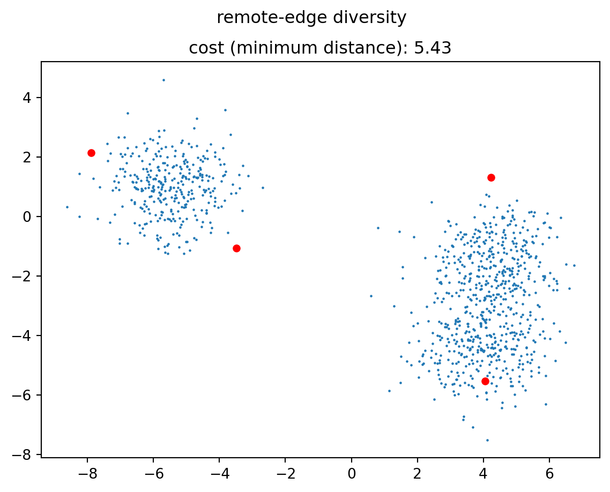
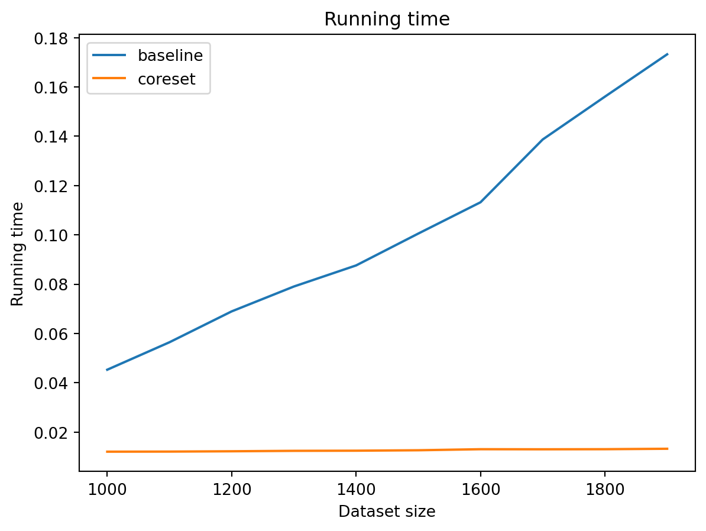
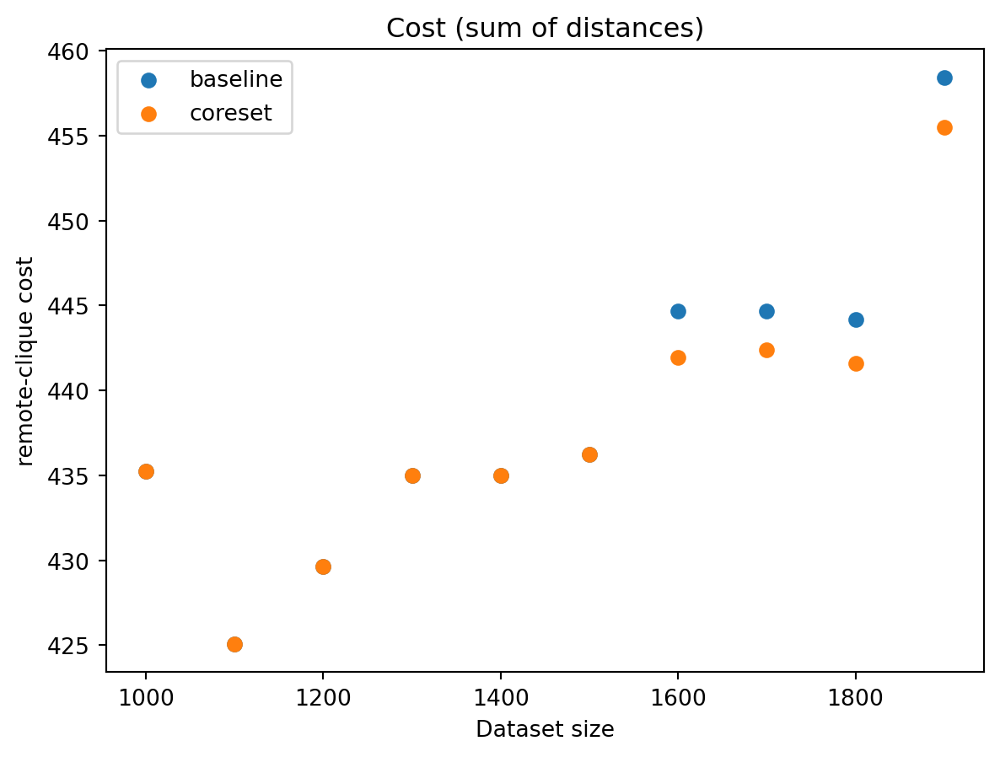
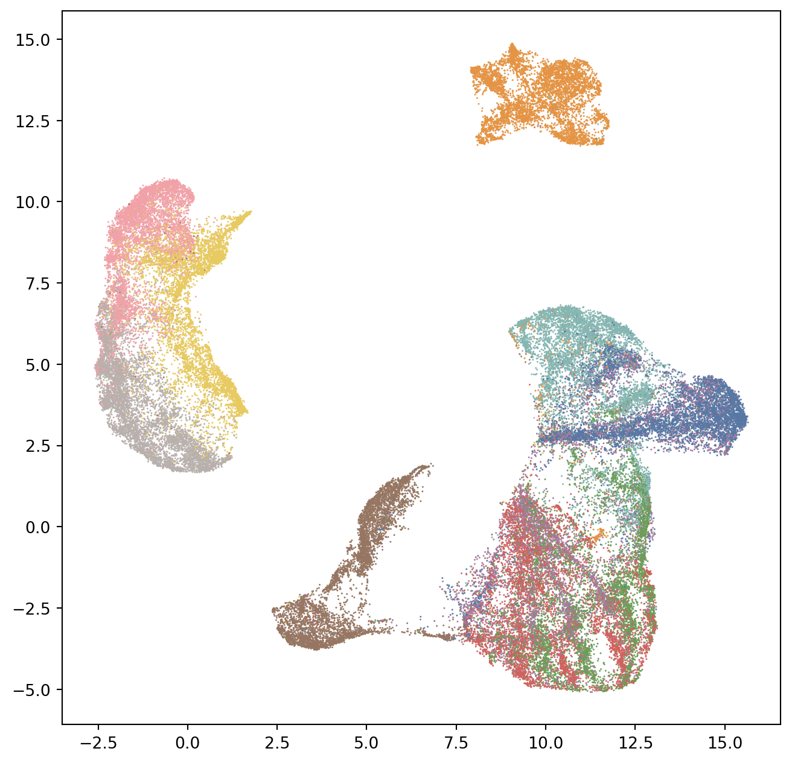
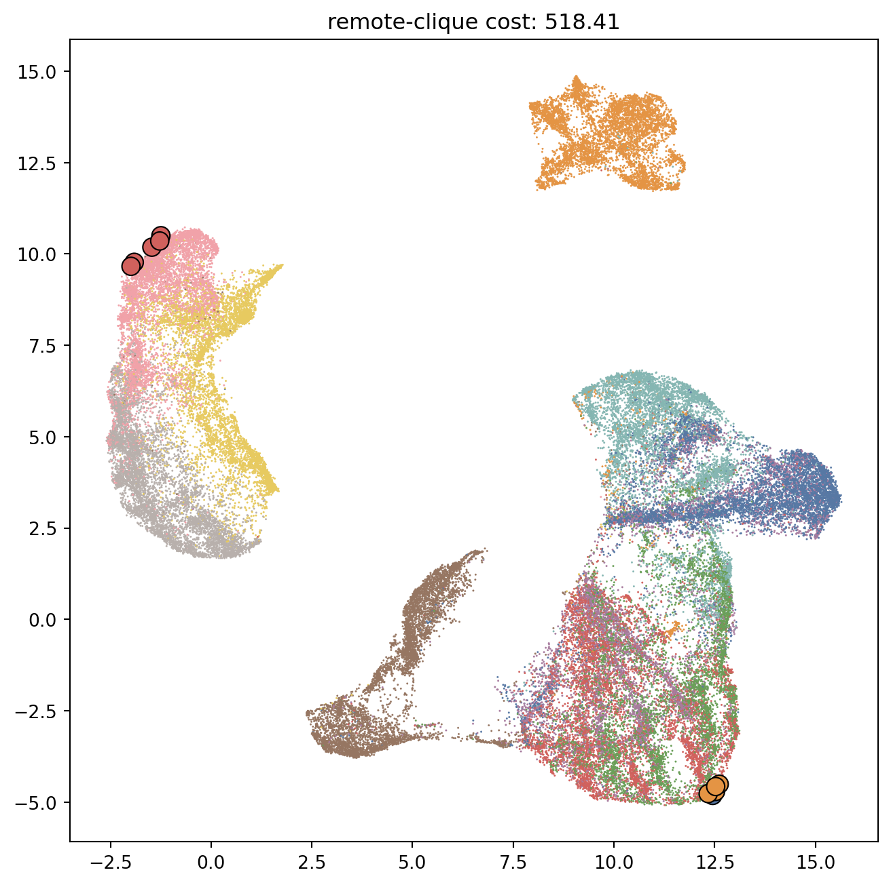
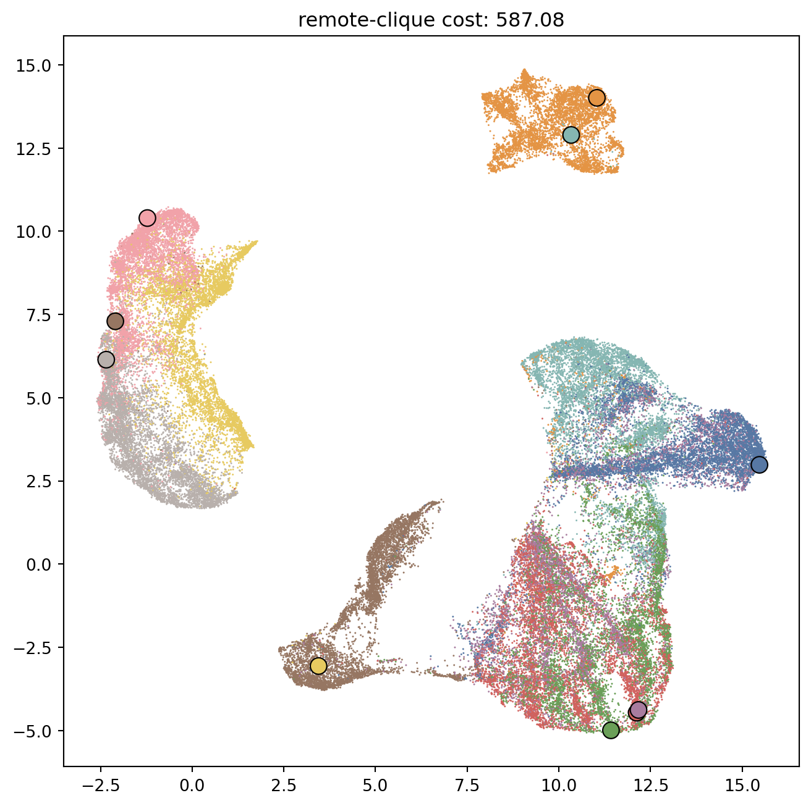

import libcoral
diversity = libcoral.DiversityMaximization(
10, # the number of points to select
"remote-edge" # the diversity type, can also be "remote-clique"
)Diversity Maximization
Finding subsets of diverse elements, under various constraints
What is Diversity Maximization?
Intuitively, the diversity maximization requires to find a set of diverse elements out of a set of points. The dissimilarity between points is measured by some distance function, for instance the Euclidean distance function.
More formally, given a dataset of points in a metric space and an integer \(k\), a diversity maximization problem requires determining a subset of \(k\) points maximizing some diversity objective measure.
There are several possible objective measures, whose names derive from the distances considered in the points of the solution.
All these problems are NP-hard, and thus libcoral implements several approximation algorithms.
libcoral currently supports the remote-edge and the remote-clique diversity notions, which require to maximize, respectively, the minimum distance between any two points of the solution and the sum of pairwise distances of the points of the solution.
Diversity Maximization with cardinality constraints
The most straightforward formulation of the diversity maximization problem requires to find a subset of \(k\) points of the input.
In libcoral, this is achieved by instantiating a DiversityMaximization object, which takes a variety of parameters. In its simplest form, the invocation is the following:
The diversity object then has a solve method that accepts a numpy 2-dimensional array of float32 data, where each row is a data point of the set. The solve method returns an array of integers, which are the integers of the rows of the input corresponding to the solution. There is a cost method as well, that returns the cost of any set of points.
Let’s build a dummy dataset to try out things:
import numpy as np
from sklearn.datasets import make_blobs
from matplotlib import pyplot as plt
import seaborn as sns
data, labels = make_blobs(1000, random_state=123)
data = data.astype(np.float32)
plt.scatter(data[:,0], data[:,1], s=0.5)The following code snippet sets up and solve both remote-edge and remote-clique on the set of points created above.
# set up and solve the remote-edge problem
diversity_edge = libcoral.DiversityMaximization(4, "remote-edge")
selected_edge = diversity_edge.solve(data)
cost = diversity_edge.cost(data[selected_edge])
plt.figure()
plt.suptitle("remote-edge diversity")
plt.title(f"cost (minimum distance): {cost:.2f}")
plt.scatter(data[:,0], data[:,1], s=0.5)
# Plot the selection of points
plt.scatter(data[selected_edge,0], data[selected_edge,1], s=20, color="red")
# set up and solve the remote-clique problem
diversity_clique = libcoral.DiversityMaximization(4, "remote-clique")
selected_clique = diversity_clique.solve(data)
cost = diversity_clique.cost(data[selected_clique])
plt.figure()
plt.suptitle("remote-clique diversity")
plt.title(f"cost (sum of distances): {cost:.2f}")
plt.scatter(data[:,0], data[:,1], s=0.5)
# Plot the selection of points
plt.scatter(data[selected_clique,0], data[selected_clique,1], s=20, color="red")
As you can see, the two solutions look quite different in terms of position of the points. Oftentimes, the remote-clique solution has points which are grouped in two clusters. This is an effect of the 2-approximation algorithm used to solve it, which is based on finding a maximum-weight matching.
The code above, especially for the remote-clique problem, has one problem: for large datasets it tends to be quite slow. This is because the approximation algorithm has a high computational complexity.
To address this problem, libcoral implements the coreset-based approach described in (Ceccarello et al. 2017). In order to use the coreset-based approach, the instantiation of the DiversityMaximization object requires the additional parameter coreset size:
diversity = libcoral.DiversityMaximization(
10,
"remote-clique",
coreset_size=1000
)Higher values of coreset_size yield more accurate solutions at the expense of the running time. The plots below report the running time (left) and the cost of the solutions (right), comparing the baseline algorithm without coresets (in blue) with the coreset-based algorithm (in orange) using a coreset of size 500.
Code
import time
def bench(coreset_size=None):
if coreset_size is None:
diversity = libcoral.DiversityMaximization(10, "remote-clique")
else:
diversity = libcoral.DiversityMaximization(10, "remote-clique", coreset_size=coreset_size)
sizes = list(range(1000, 2000, 100))
times = []
costs = []
for n in sizes:
data, labels = make_blobs(n, random_state=123)
data = data.astype(np.float32)
start = time.time()
selected = diversity.solve(data)
end = time.time()
times.append(end - start)
costs.append(diversity.cost(data[selected]))
return dict(sizes=sizes, times=times, costs=costs)
results_baseline = bench(None)
results_coreset = bench(500)
plt.figure()
plt.title("Running time")
plt.xlabel("Dataset size")
plt.ylabel("Running time")
plt.plot(results_baseline["sizes"], results_baseline["times"], label="baseline")
plt.plot(results_coreset["sizes"], results_coreset["times"], label="coreset")
plt.legend()
plt.figure()
plt.title("Cost (sum of distances)")
plt.xlabel("Dataset size")
plt.ylabel("remote-clique cost")
plt.scatter(results_baseline["sizes"], results_baseline["costs"], label="baseline")
plt.scatter(results_coreset["sizes"], results_coreset["costs"], label="coreset")
plt.legend()

Clearly, the running time using coresets is a fraction of the baseline. As for the cost, recall that for diversity maximization higher is better: we observe that on larger datasets the coreset introduces a moderate loss of quality.
Diversity Maximization with Matroid Constraints
An important variant of the diversity maximization primitive prescribes that the solution satisfies an additional orthogonal requirement, which can be specified as a matroid constraint (i.e., a feasible solution must be an independent set of size \(k\)).
For instance, if we have a labelled dataset and we want the solution to contain at most \(k_\ell\) points with label \(\ell\), we can set up a diversity maximization problem with a partition matroid constraint.
For experimenting with matroid constraints we will use the fashion-mnist dataset, which comprises 60000 28x28 images of apparel items out of 10 possible categories. Each image then corresponds to a 784 dimensional vector.

For the sake of example, we embed the dataset in two dimensions using UMAP.
Code
def load_fashion_mnist(seed=None, sample_size=None):
"""This function just downloads the 60k training images of fashion-mnist locally, if not already available,
and returns them as a float32 array.
"""
import urllib.request
import os
import gzip
import umap
import numpy as np
fashion_local = "train-images-idx3-ubyte.gz"
fashion_url = "https://raw.githubusercontent.com/zalandoresearch/fashion-mnist/master/data/fashion/train-images-idx3-ubyte.gz"
fashion_labels_local = "train-labels-idx1-ubyte.gz"
fashion_labels_url = "https://github.com/zalandoresearch/fashion-mnist/raw/master/data/fashion/train-labels-idx1-ubyte.gz"
if not os.path.isfile(fashion_local):
print("downloading fashion-mnist file")
urllib.request.urlretrieve(fashion_url, fashion_local)
if not os.path.isfile(fashion_labels_local):
print("downloading fashion-mnist file")
urllib.request.urlretrieve(fashion_labels_url, fashion_labels_local)
with gzip.open(fashion_local, 'rb') as imgpath:
images = np.frombuffer(imgpath.read(), dtype=np.uint8,
offset=16).reshape(60000, 784)
with gzip.open(fashion_labels_local, 'rb') as lbpath:
labels = np.frombuffer(lbpath.read(), dtype=np.uint8,
offset=8)
data = images.astype(np.float32)
umap_file = "fashion-mnist-umap.npy"
if not os.path.isfile(umap_file):
embed = umap.UMAP()
embedding = embed.fit_transform(data)
np.save(umap_file, embedding)
embedding = np.load(umap_file)
if sample_size is not None:
print("returning sampled")
seed = seed if seed is not None else 1234
gen = np.random.default_rng()
idxs = np.arange(data.shape[0])
gen.shuffle(idxs)
idxs = idxs[:sample_size]
return data[idxs], labels.astype(np.uint32)[idxs], embedding[idxs]
if seed is not None:
gen = np.random.default_rng()
idxs = np.arange(data.shape[0])
gen.shuffle(idxs)
return data[idxs], labels.astype(np.uint32)[idxs], embedding[idxs]
return data, labels.astype(np.uint32), embeddingWe define a partition matroid on the categories, requiring that at most one item is picked from each category:
partition_matroid = libcoral.MatroidDescription([1] * 10)Then we instantiate the algorithm so to find a solution that respects the matroid constraint. Note that we provide the coreset_size parameter: this case it is absolutely required, as the approximation algorithm for Diversity Maximization under matroid constraints is a very expensive local search. The algorithms used in this case are described in (Ceccarello, Pietracaprina, and Pucci 2018) and (Ceccarello, Pietracaprina, and Pucci 2020).
diversity = libcoral.DiversityMaximization(
10, # how many points we want
"remote-clique", # the type of diversity
coreset_size=1000, # the size of the coreset
matroid=partition_matroid # the matroid constraint
)To actually solve the problem we now need information about labels along with the data.
data, categories, embedding = load_fashion_mnist(seed=1234)Code
palette = [
"#5778a4",
"#e49444",
"#d1615d",
"#85b6b2",
"#6a9f58",
"#e7ca60",
"#a87c9f",
"#f1a2a9",
"#967662",
"#b8b0ac",
]
plt.figure(figsize=(8,8))
sns.scatterplot(
x=embedding[:,0],
y=embedding[:,1],
hue=categories,
palette=palette,
s=1,
edgecolors=None,
legend=False
)
We will now select 10 points without matroid constraints.
diversity = libcoral.DiversityMaximization(
10,
"remote-clique",
coreset_size=5000
)
selected = diversity.solve(embedding)
cost = diversity.cost(embedding[selected])Notice that we have more than one point per category. Also note that some of the selected points appear to be outside of their color’s cluster: this is due to the fact that some points are actually far away from other points from the same category.
Code
plt.figure(figsize=(8,8))
ax = plt.gca()
cost = diversity.cost(embedding[selected])
ax.set_title(f"remote-clique cost: {cost:.2f}")
sns.scatterplot(
x=embedding[:,0],
y=embedding[:,1],
hue=categories,
palette=palette,
s=1,
edgecolors=None,
legend=False,
ax=ax
)
sns.scatterplot(
x=embedding[selected,0],
y=embedding[selected,1],
hue=categories[selected],
palette=palette,
s=100,
edgecolors="black",
legend=False,
ax=ax
)/tmp/ipykernel_69092/2573716032.py:16: UserWarning: The palette list has more values (10) than needed (3), which may not be intended.
sns.scatterplot(
Solving the problem with matroid constraints returns a point from each category, as required by the partition matroid constraint.
diversity = libcoral.DiversityMaximization(
10,
"remote-clique",
coreset_size=5000,
matroid=partition_matroid
)
selected = diversity.solve(embedding, categories)
cost = diversity.cost(embedding[selected])
print(categories[selected])[4 6 2 5 9 1 8 7 0 3]Code
plt.figure(figsize=(8,8))
ax = plt.gca()
cost = diversity.cost(embedding[selected])
ax.set_title(f"remote-clique cost: {cost:.2f}")
sns.scatterplot(
x=embedding[:,0],
y=embedding[:,1],
hue=categories,
palette=palette,
s=1,
edgecolors=None,
legend=False,
ax=ax
)
sns.scatterplot(
x=embedding[selected,0],
y=embedding[selected,1],
hue=categories[selected],
palette=palette,
s=100,
edgecolors="black",
legend=False,
ax=ax
)
References
Ceccarello, Matteo, Andrea Pietracaprina, and Geppino Pucci. 2018. “Fast Coreset-Based Diversity Maximization Under Matroid Constraints.” In WSDM, 81–89. ACM.
———. 2020. “A General Coreset-Based Approach to Diversity Maximization Under Matroid Constraints.” ACM Trans. Knowl. Discov. Data 14 (5): 60:1–27.
Ceccarello, Matteo, Andrea Pietracaprina, Geppino Pucci, and Eli Upfal. 2017. “MapReduce and Streaming Algorithms for Diversity Maximization in Metric Spaces of Bounded Doubling Dimension.” Proc. VLDB Endow. 10 (5): 469–80.